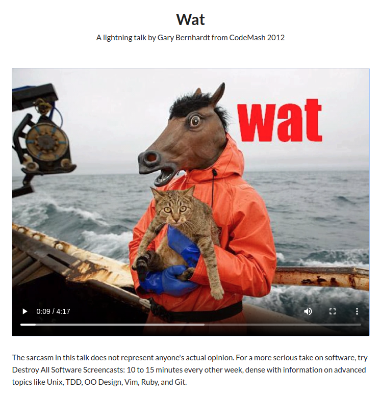
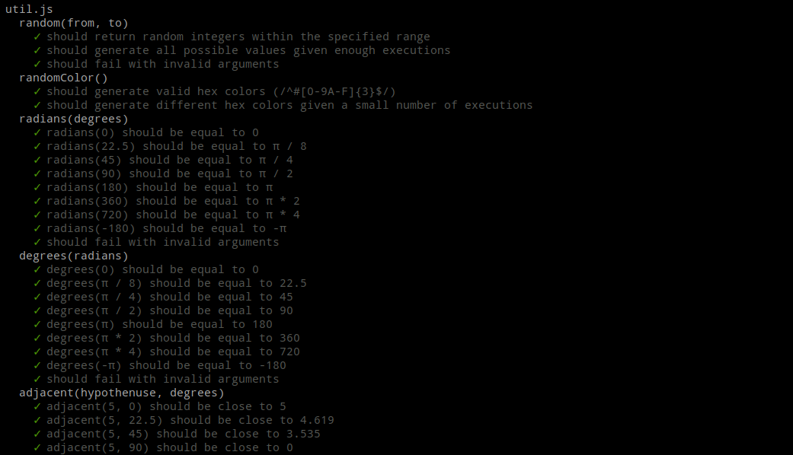

Web
Object-oriented JavaScript
Bertil Chapuis
## <i class="fas fa-tasks"></i> Overview of Today's Class - Wat (Video) - Quiz about last week's lecture - Correction of last week's assignment - Prototype-oriented JavaScript - Object-oriented JavaScript - Manipulating DOM objects - Drawing in the HTML Canvas - Introduction of next week's assignment
<a href="https://www.destroyallsoftware.com/talks/wat" target="_blank">  </a>
Quiz
Foundations of JavaScript
## <i class="fas fa-question-circle"></i> Question 1 Cochez la ou les affirmations correcte(s) à propos de JavaScript: - (A) JavaScript est un language compilé - (B) JavaScript est un language interpreté - (C) JavaScript est un language statique - (D) JavaScript est un language dynamique - (E) JavaScript est un language orienté objet - (F) JavaScript est un language orienté prototype - (G) Aucune affirmation correcte
# <i class="fas fa-question-circle"></i> Question 2 Quelle est la visibilité (scope) d'une variable définie avec le mot clé var en dehors d'une fonction? - (A) Sa visibilité est globale - (B) Sa visibilité est locale - (C) Sa visibilité est limitée au bloque courant - (D) Aucune réponse correcte
# <i class="fas fa-question-circle"></i> Question 3 Quelle est la valeur imprimée par le programme suivant? ```js console.log("PI = ${Math.PI}"); ``` - (A) `"PI = 3.141592653589793"` - (B) `"PI = ${Math.PI}"` - (C) `"PI = 3.14"` - (D) `"PI = ${3.141592653589793}"` - (E) Aucune réponse correcte
# <i class="fas fa-question-circle"></i> Question 4 Quelle est la valeur imprimée par le programme suivant? ```js let i = 0; console.log(i++); ``` - (A) `0` - (B) `1` - (C) `Error` - (D) `undefined` - (E) Aucune réponse correcte
# <i class="fas fa-question-circle"></i> Question 5 Quelle est la valeur imprimée par le programme suivant? ```js var x = "1"; if (x == 1) { var x = 2; } console.log(x); ``` - (A) `1` - (B) `"1"` - (C) `2` - (D) `"2"` - (E) `null` - (F) Aucune réponse correcte
# <i class="fas fa-question-circle"></i> Question 6 Quelle est la valeur imprimée par le programme suivant? ```js function fun(value) { let v = value; return () => v++; } let f = fun(10); f(); console.log(f()); ``` - (A) `10` - (B) `11` - (C) `12` - (D) `Error` - (E) Aucune réponse correcte
Corrections
## <i class="fab fa-js"></i> Exercice 2 
## <i class="fas fa-question-circle"></i> Questions
Prototype-oriented JavaScript
## <i class="fab fa-js"></i> Recall JavaScript's Types ECMAScript defines 7 **primitive** (Immutable) types for values: ```js undefined; // Undefined 3.14; // Number true; // Boolean "Heig-vd"; // String 9007199254740992n; // BigInt Symbol("Symbol") // Symbol null; // Null (Structural root primitive) ``` ECMAScript defines a special mutable type called **object** for collections of properties (objects and array). ```js {prop: "value"}; // Object ``` In a dynamic language you don't specify the type when you declare a variable and the type of a variable can change. https://developer.mozilla.org/en-US/docs/Web/JavaScript/Data_structures#Data_types
## <i class="fab fa-js"></i> Objects An object is a mutable unordered collection of properties. A property is a tuple of a key and a value. A property key is either a string or a symbol. A property value can be any ECMAScript language value. ```js let car = { make: 'Ford', model: 'Mustang', year: 1969 } ``` You can access the properties of an object using the **dot notation** (property names: `"^[a-z]+(_[a-z]+)+$"`): ```js let car = new Object(); car.make = 'Ford'; car.model = 'Mustang'; car.year = 1969; ``` Properties can also be accessed or set using the **bracket notation**: ```js let car = new Object(); car['make'] = 'Ford'; car['model'] = 'Mustang'; car['year'] = 1969; ``` https://developer.mozilla.org/en-US/docs/Web/JavaScript/Guide/Working_with_Objects
## <i class="fab fa-js"></i> Methods When a function is stored as a property of an object, we call it a **method**. When a method is invoked, the value of `this` inside the method is the object the method is called on. ```js var apple = { color: 'red', toString: function() { return `This fruit is ${this.color}!`; } } console.log(apple.toString()); // This fruit is red! ```
## <i class="fas fa-hand-paper"></i> Methods When a function which is not the property of an object is invoked, `this` is bound to the **global** object. This is an **error** in the design of the language as it prevent the definition of helper funtions. ```js var color = 'blue'; var apple = { color: 'red', toString: function() { function helper() { return `This fruit is ${this.color}!`; } return helper(); } } // TypeError: Cannot read properties of undefined (reading 'color') console.log(apple.toString()); ``` This issue can be addressed with: - The `apply(this, args)`, `call(this, arg, ...)` or `bind(this)` methods of a `Function` object that redefine `this`. - The arrow function expression that do not define its own `this` and takes the one present in its scope.
## <i class="fab fa-js"></i> Consider the Array object The `Array` object is a global object that is used in the construction of arrays; which are high-level, list-like objects. ```js let fruits = ['Apple', 'Banana', 'Pear']; ``` Here, the `[]` notation is a **shorthand** for the `Array` constructor. ```js let fruits = new Array('Apple', 'Banana', 'Pear'); ``` `Array` is a function and the `new` operator changes its behavior: - It creates a new object that inherits from the `Array.prototype` object. - It binds the newly created object to the `this` keyword. - It returns the newly created object unless the function returns another object. As arrays have properties and methods, where do they come from? They are defined in the `Array.prototype` object. https://developer.mozilla.org/en-US/docs/Web/JavaScript/Reference/Global_Objects/Array
## <i class="fab fa-js"></i> Introducing the prototype Almost all objects in JavaScript are instances of `Object`, which sits on the top of a prototype chain. A typical object inherits properties (including methods) from `Object.prototype`, `Object.prototype` inherits properties from `null`. Changes to an object's prototype are seen by all instances of that object. That's why it's called a prototype. The properties and methods of prototypes can be **overridden** along the chain. ```js var fruits = ['apple', 'banana', 'pear']; console.log(fruits.toString()); // apple,banana,pear Array.prototype.toString = function() { return `Array of size ${this.length}`; } console.log(fruits.toString()); // Array of size 3! ``` https://developer.mozilla.org/en-US/docs/Web/JavaScript/Reference/Global_Objects/Object/prototype
## <i class="fab fa-js"></i> Putting it all together As objects inherit properties from their prototype, we can say that JavaScript is a **prototype-based** language and not a **class-based** one. The javascript's class syntax is just a **syntactic sugar** for the prototype-based inheritance. ```js function Fruit(color) { this.color = color; } Fruit.prototype.toString = function() { return `This fruit is ${this.color}!`; } var apple = new Fruit("red"); console.log(apple.toString()); // This fruit is red! ```
## <i class="fab fa-js"></i> Prototype Inheritence With prototypes, inheritence can be achieved using the `Object.create(obj)` or `Object.assign(target, source)` functions. Here, the idea consists in using an existing object as the prototype of a newly created object. ```js function Fruit(color) { this.color = color; } Fruit.prototype.toString = function() { return `This fruit is ${this.color}!`; } function Apple(color, name) { Fruit.call(this, color); this.name = name; } Apple.prototype = Object.assign(Apple.prototype, Fruit.prototype); var apple = new Apple("red", "golden"); console.log(apple.toString()); // This fruit is red! ``` When a lookup fails on the apple object, it now falls back on the Fruit `prototype`.
Object-oriented JavaScript
## <i class="fab fa-js"></i> The Object-oriented Syntax JavaScript classes are introduced in ECMAScript 2015 and are syntactical sugar over JavaScript's existing prototype-based inheritance. The class syntax is not introducing a new object-oriented inheritance model to JavaScript. ```js class Fruit { constructor(color) { this.color = color; } toString() { return `This fruit is ${this.color}!`; } } class Apple extends Fruit { constructor(color, name) { super(color); this.name = name; } toString() { return super.toString(); } } let apple = new Apple("red", "golden"); console.log(apple.toString()); // This fruit is red! ``` Here, The `extent` keyword is used in class declarations or class expressions to create a class which is a child of another class. The `constructor` method is a special method for creating and initializing an object created with a class. The `super` keyword is used to access and call functions on an object's parent. https://developer.mozilla.org/en-US/docs/Web/JavaScript/Reference/Classes
## <i class="fab fa-js"></i> Static properties and methods The class syntax enables the use of `static` methods and properties, which are shared across all instances of the class. ```js class Fruit { static name = "Fruit"; static getName() { return this.name; } } console.log(Fruit.getName()); // Fruit ``` https://developer.mozilla.org/en-US/docs/Web/JavaScript/Reference/Classes
## <i class="fab fa-js"></i> Private properties and methods The class syntax enables the use of `private` properties and methods, which are not accessible outside of the class. ```js class Fruit { #name = "Fruit"; getName() { return this.#name; } } let fruit = new Fruit(); console.log(fruit.getName()); // Fruit console.log(fruit.#name); // SyntaxError: Private field '#name' must be declared in an enclosing class ``` https://developer.mozilla.org/en-US/docs/Web/JavaScript/Reference/Classes
## <i class="fab fa-js"></i> Getters and setters The class syntax enables the use of `getters` and `setters` to access and modify properties. ```js class Fruit { constructor(color) { this.color = color; } get color() { return this._color; } set color(value) { this._color = value; } } let apple = new Fruit("red"); console.log(apple.color); // red apple.color = "green"; console.log(apple.color); // green ``` https://developer.mozilla.org/en-US/docs/Web/JavaScript/Reference/Classes
## <i class="fab fa-js"></i> Species Sometimes, you want to create a new object of the same type as an existing object. For example, when you want to create a new array from an existing array, you want to create a new array of the same type. The `Symbol.species` property allows you to do that by specifying the constructor function that is used to create derived objects. ```js class MyArray extends Array { // Overwrite species to the parent Array constructor static get [Symbol.species]() { return Array; } } const a = new MyArray(1, 2, 3); const mapped = a.map((x) => x * x); console.log(mapped instanceof MyArray); // false console.log(mapped instanceof Array); // true ``` https://developer.mozilla.org/en-US/docs/Web/JavaScript/Reference/Classes
## <i class="fab fa-js"></i> Mix-ins Multiple inheritance is not supported in JavaScript, but it is possible to simulate it with mix-ins. ```js const canWalk = (Base) => class extends Base { walk() { console.log("Walking..."); } }; const canEat = (Base) => class extends Base { eat() { console.log("Eating..."); } }; class Person extends canWalk(canEat(Object)) { constructor(name) { super(); this.name = name; } } let person = new Person("John"); person.walk(); // Walking... person.eat(); // Eating... ``` https://developer.mozilla.org/en-US/docs/Web/JavaScript/Reference/Classes
## <i class="fab fa-js"></i> Modules ECMAScript 6 introduced the concept of modules. Modules are reusable pieces of code that can be exported from one program and imported for use in another program. ```html <!-- inside index.html --> <script type="module" src="index.js"></script> ``` ```js // inside index.js import Apple from 'apple.js'; console.log(new Apple()); ``` ```js // inside apple.js import Fruit from 'fruit.js'; class Apple extends Fruit {} export Apple; ``` ```js // inside fruit.js class Fruit {} export Fruit; ``` Have a look at the documentation for `default` and `as` keywords. Object destructuring is also supported and can be used to import multiple objects from a module. https://developer.mozilla.org/en-US/docs/Web/JavaScript/Guide/Modules
Manipulating DOM objects
## <i class="fas fa-sitemap"></i> What is the DOM? - DOM stands for **Document Object Model** - The DOM is a programming interface for HTML and XML - The DOM represents the structure of a document in memory - The DOM is an object-oriented representation of the web page - The DOM lets other programming languages manipulate the document https://developer.mozilla.org/en-US/docs/Web/API/Document_Object_Model
## <i class="fas fa-sitemap"></i> The DOM's content tree ```html <html> <head> <title>My Document</title> </head> <body> <h1>Header</h1> <p>Paragraph</p> </body> </html> ``` When a browser such as Chrome or Firefox parses an HTML document, it builds a **content tree** and then uses it to **display** the document. <img src="images/html_content_tree.jpg" /> https://developer.mozilla.org/en-US/docs/Web/API/Document_object_model/Using_the_W3C_DOM_Level_1_Core
## <i class="fas fa-hand-paper"></i> Accessing the Document In JavaScript, the `Document` interface represents any web page loaded in the browser and serves as an entry point into the web page's content, which is the DOM tree. Access the `document` object and its properties from the Chrome DevTools. ```js document; document.location; document.location = "https://heig-vd.ch/"; document.designMode = "on"; Document.referrer document.writeln("Hello World!") ``` https://developer.mozilla.org/en-US/docs/Web/API/Document
## <i id="my-icon" class="fas fa-hand-paper"></i> Accessing the Elements of the DOM The `Element` interface represents the HTML elements of loaded in the DOM tree. ```js console.log(document.getElementById("id")); console.log(document.getElementsByClassName("slide")); console.log(document.getElementsByTagName("h1")); ``` CSS Selectors can also be used to query elements. ```js console.log(document.querySelector("ul > li")); // selects the first matching element console.log(document.querySelectorAll("ul > li")); // selects all matching elements ``` Elements can then be modified in JavaScript. ```js document.getElementsByClassName("slide") .forEach(el => el.style = "background-color: blue"); let element = document.getElementById("my-icon"); element.innerHTML = "<p>Hello, World!</p>"; element.setAttribute("href", "https://www.heig-vd.ch/"); element.className; element.classList; element.children; ``` https://developer.mozilla.org/en-US/docs/Web/API/Element
## <i class="fas fa-hand-paper"></i> Listening to DOM Events DOM Events are sent to notify code of interesting things that have taken place. Each event is represented by an object which is based on the Event interface, and may have additional custom fields and/or functions used to get additional information about what happened. ```js document.onkeydown = function(event) {console.log(event);} document.addEventListener('keydown', event => console.log(event)) ``` Important DOM events include `load`, `click`, `mouseenter`, etc. ```js element.addEventListener('mouseenter', event => doSomething()); ``` The propagation of an event in the DOM can be stopped programatically. ```js event.stopPropagation(); ``` Event handlers can also be registered from the HTML. ```html <a href="http://www.heig-vd.ch" onclick="event.stopPropagation();"> ``` https://developer.mozilla.org/en-US/docs/Web/Events
## <i class="fab fa-js"></i> DOM Manipulation Libraries Libraries such as [jQuery](https://jquery.com/) and [Zepto](https://jquery.com/) are intended at simplifying DOM manipulation by extending the DOM and providing helpers. ```html <script src="https://ajax.googleapis.com/ajax/libs/jquery/3.4.1/jquery.min.js"></script> ``` ```js $(document).ready(function(){ $("p").click(function(){ $(this).hide(); }); }); ``` JQuery uses an **imperative style** that requires to specify the changes in the order they should happen. Modern frameworks use a **declarative style** (such as React, Angular or Vue).
## <i class="fab fa-js"></i> Depending or not depending? The Peter Parker principle: <img src="https://media.giphy.com/media/10KIsXhwdoerHW/giphy.gif" alt="Remember..." /> ### Must Read - [Thou shalt not depend on me (NDSS 2017)](https://blog.acolyer.org/2017/03/07/thou-shalt-not-depend-on-me-analysing-the-use-of-outdated-JavaScript-libraries-on-the-web/) - [Small world with high risks (USENIX Security 2019)](https://blog.acolyer.org/2019/09/30/small-world-with-high-risks/)
Drawing in the HTML Canvas
## <i class="fab fa-js"></i> Initializing a Canvas The Canvas API provides a means for drawing graphics via JavaScript and the `canvas` element. ```html <canvas id="canvas" width="800" height="600" /> ``` ```js let canvas = document.getElementById("canvas"); const ctx = canvas.getContext('2d'); // setting the context properties ctx.strokeStyle = 'blue'; ctx.fillStyle = 'green'; // clearing the canvas ctx.clearRect(0, 0, 100, 100); ``` https://developer.mozilla.org/en-US/docs/Web/API/Canvas_API
## <i class="fab fa-js"></i> Drawing in the Canvas Writing some text: ```js ctx.fillText("test", 30, 10) ``` Filling a rectangle: ```js ctx.fillRect(10, 10, 150, 100); ``` Drawing an arc: ```js ctx.beginPath(); ctx.arc(50, 50, 10, 0, Math.PI) ctx.stroke(); ``` Free drawing: ```js ctx.beginPath(); ctx.lineTo(20, 20); ctx.lineTo(50, 50); ctx.stroke(); ``` https://developer.mozilla.org/en-US/docs/Web/API/Canvas_API
## <i class="fab fa-js"></i> Transformations in the Canvas Transformations enables more powerful ways to translate the origin to a different position, rotate the grid and even scale it. Canvas states are stored on a stack: - When the `save()` method is called, the current drawing state is pushed onto the stack. - When the `restore()` method is called, the last saved state is popped off the stack and all saved settings are restored. When you perform transformations on the grid to draw an object you often want to restore a prior state to draw the next object. ```js ctx.fillStyle = 'rgb(0, 0, 255, 0.4)'; ctx.save(); angle = 0; while (angle < Math.PI/2) { ctx.translate(200, 200); ctx.rotate(Math.PI / 10); ctx.translate(-200, -200); ctx.fillRect(170, 170, 60, 60); angle += Math.PI / 10; } ctx.restore(); ``` https://developer.mozilla.org/en-US/docs/Web/API/Canvas_API/Tutorial/Transformations
## Rendering Loop and Game Loop The [setTimeout](https://developer.mozilla.org/en-US/docs/Web/API/WindowOrWorkerGlobalScope/setTimeout) method sets a timer which executes a function or specified piece of code once the timer expires. The [setInterval](https://developer.mozilla.org/en-US/docs/Web/API/WindowOrWorkerGlobalScope/setInterval) method, offered on the Window and Worker interfaces, repeatedly calls a function or executes a code snippet, with a fixed time delay between each call. The [requestAnimationFrame](https://developer.mozilla.org/en-US/docs/Web/API/window/requestAnimationFrame) method tells the browser that you wish to perform an animation and requests that the browser call a specified function to update an animation before the next repaint. https://developer.mozilla.org/en-US/docs/Learn/JavaScript/Asynchronous/Timeouts_and_intervals